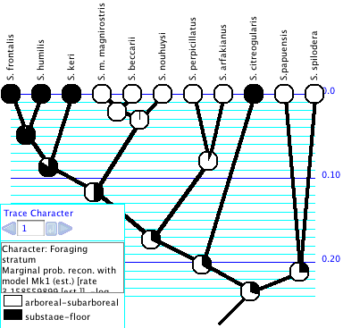
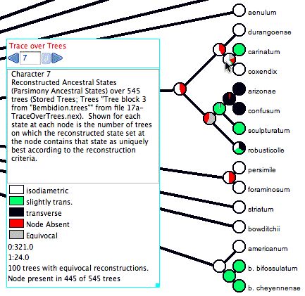

Studying the History of Character
Evolution
With a phylogenetic tree and a distribution
of character states in the observed (terminal) taxa, Mesquite
can attempt to reconstruct the character states at ancestral nodes.
Two separate issues to consider are the method by which the reconstruction
is done, and how its results are displayed to the user. Mesquite
currently can use either parsimony, likelihood or Bayesian methods
to reconstruct ancestral states, and has several display methods,
including "Trace Character History" which paints the
branches of the tree to show the reconstruction.
We recommend highly that you examine
the example files provided in the folder "Ancestral
State Examples". The minimal configuration to use with these
examples is "Ancestral States" (indicate this configuration
under File>Activate/Deactivate Packages>Choose
Configuration), but you can also leave Mesquite in
its default All Installed Modules mode.

Trace Character
History
The Trace Character History facility
graphically represents a history of character evolution on the
tree. It is available under the Analysis menu of a tree window
(e.g., the basic Tree Window, Dependent Tree Window, Mirror Tree
Window, Multitree Window). If you select this you will probably
be asked for a source of characters (e.g., stored
characters) and a reconstruction method (e.g.,
parsimony, likelihood,
stochastic character mapping). (If you have "Use Stored Characters/Matrices by Default" turned on in the Defaults submenu if the File menu, Mesquite won't ask you and will simply use Stored Characters.) The tree will
be painted to show ancestral states, and a trace legend will appear.
The Trace Legend contains an important text area
that gives details of the current ancestral state tracing. You
can also see details of the reconstruction by switching the window
to Text mode using the tabs at its top.
For categorical and molecular data, you can change the
colors used in Trace Character by double clicking on
the color rectangle in the Trace Legend. Revert to Default Colors
is available in the Trace menu.
For parsimony reconstructions, any tree drawing style will suffice.
For likelihood reconstructions, we recommend the Balls&Sticks
style (Drawing menu, Tree Form) with Line Style "Square".
This permits you to see the relative likelihoods and branch lengths.
For stochastic character mapping, we recommend the Square Tree
style in order to display the changes within a branch.
The Trace menu gives menu items to
control the character history and its display. Some important
ones are:
Character history source:
Typically you may use Trace Character History to reconstruct the
ancestral states of an observed character. Alternatively, you
can trace a simulated history ("Simulate Ancestral States").
The reconstructed states need not be based on actual data, but
could be based on simulated data. "Simulate Ancestral States"
shows the "actual" history of character evolution branch
by branch as it occured in the simulation,
not as it was reconstructed, and thus may show ancestral states
that would be unreconstructable, obliterated by subsequent changes.
Next, Previous, Choose Character
History: Usually, this will allow you to choose which
character to view. You can also scroll through characters using
the blue arrows in the trace legend.
Trace Display Mode:
With Trace>Trace Display Mode>Shade States
and Trace>Trace Display Mode>Label States
you choose whether to see the branches painted, or have the states
indicated in labels. If painted, you can also ask that states
be indicated by labels by choosing Trace>Label
States.
You can also see details of the reconstruction
at a node by holding the cursor over the branch. A description
of the reconstructed states will appear at the bottom part of
the Trace Character Legend. Another method is to use the Text
view of the window (touch on the Text tab at the top of the tree
window) and scroll down — a text version of the trace should
appear.
Reconstruction Method: For more details on reconstruction
methods, see the sections on parsimony,
likelihood, and stochastic
character mapping.
Trace All Characters
Trace All Characters summarizes ancestral state reconstructions
of many characters simultaneously. To request it, choose Choose
(Tree Window)Analysis>Trace All Characters.
A text window like that shown below will appear, listing the ancestral
states reconstructed at each node for each character. Node numbers
show up in red on the tree. (Alternatively, spots showing node
numbers in the figure below can be turned on in the Tree Window's
Drawing menu by selecting Show Node Numbers.)

By default only the selected nodes are listed. (Nodes
can be selected using tools in the Tree Window.) You can request
to show all nodes by turning off Show Selected Nodes Only in the
Trace_All menu. By default all characters are listed; this can
be changed using the Show Selected Characters Only menu item.
The ancestral state reconstruction can be controlled
in the Trace_All menu of the tree window.
The table is either listed by characters or by nodes;
you can switch from one to the other using the Rows are Characters
menu item
Columns in the table in the text window may not
appear perfectly aligned, but it is presented as a tab-delimited
table, so you should be able to copy the text and paste it in
to a text file to read in to your favorite spreadsheet program.
Trace Character
Over Trees
The Trace Character Over Trees facility summarizes
ancestral state reconstructions over a series of trees. This is
useful to understand how ancestral state reconstructions vary
over a series of trees, for instance if there is uncertainty in
the tree. It works for categorical characters
only. Also, Trace Character Over Trees does NOT calculate
a consensus tree for you. As with all other analyses
in the Tree Window, it works with the tree that is given to it
by the Tree Window. If you want to make your summary on a consensus
tree, then you need to put the consensus tree into the Tree Window
first and then request Trace Character Over Trees.
Choose (Tree Window)Analysis>Trace
Character Over Trees. This examines a series of trees,
and for each examines a character's ancestral states on that tree.
For each node in the tree in the tree window, it attempts to summarize
what ancestral states are reconstructed for that same clade in
the series of trees (as long as the same clade exists in the other
trees). For example, imagine the tree in the tree window includes
the clade Tetrapoda. Each of the series of trees is examined,
and if that tree includes the clade Tetrapoda, then its reconstructed
ancestral states are examined. If the tree doesn't include Tetrapoda,
then it is ignored for the sake of summarizing the tetrapod ancestral
states. The tree in the tree window is then decorated to summarize
what ancestral states are reconstructed for each of the clades.
Here is an example of Trace Character Over Trees in action:

The cursor is over a node (the most recent common ancestor of
carinatum and coxendix), and thus the legend shows a summary.
The node (i.e., the clade it
represents)
is
present
in only 445
of the 545 trees examined. For this reason, 100/545 or 18.3%
of the pie chart for that node is shown in red, as the node is
not present in that fraction of the trees. In addition, 100 of
the trees with that node have an equivocal reconstruction at
that node; those trees are shown in gray
in the pie chart.
Of the 345 trees with the node and an unequivocal reconstruction,
321 trees have "isodiametric" reconstructed at the node (shown
in white), and in 24 trees have state "slightly trans." at that
node (shown as a very thin sliver of green). In this example,
"Count Trees with Uniquely Best States" is selected in the
Calculate submenu of the Trace_Over_Trees menu. With this option
a tree is counted as having a state at a node only if the state
is the only optimal state. What is considered optimal depends
on the reconstruction method. With parsimony, states are considered
equally optimal if they are equally parsimonious. With likelihood,
the Decision Threshold is used to decide whether states are good
enough to be considered within the optimal set.
There are two alternatives to
"Count Trees with Uniquely Best States". One is "Count
All Trees with State".
With this option for counting, a tree is counted as
having
a state at a node if the state is within the optimal set, whether
or not there are other states within the optimal set. When the
"Count All Trees with State" option is used, the sum
of tree counts for the states at a node can more than the total
number of trees with the clade,
for a tree can get counted multiply at a node, under each state
in an equivocal assignment. The other calculation option is
"Average Frequencies Across Trees". This option is only available
for reconstruction methods such as likelihood that yield a frequency
or probability for each state at each node. The value presented
for a node for a state is then the average frequency of that
state across all of the trees possessing that node. All trees
with the node are included in this calculation, even if the frequencies
are very low.
An important option is what trees
to examine. If the tree in the tree window is a consensus
tree, then
the trees examined might be the original set of most parsimonious
trees that built the consensus. Trace Character Over Trees
could
then show how the ancestral state reconstruction varies among
the most parsimonious trees. The trees examined might also
be
derived from a Bayesian analysis (perhaps subsampled using the
Sample Trees from Separate File tree source), and the ancestral
states obtained by likelihood, to do an analysis
in Lutzoni's
style.
The trees
might be random resolutions of an unresolved tree, or trees with
random noise added to branch lengths, and so on. This would
allow
you to see how the results would vary if the tree changed. See
the submenu Trace_Over_Trees>Tree Source
for options.
Parsimony
Reconstruction Methods
Parsimony reconstruction methods find
the ancestral states that minimize the number of steps of character
change given the tree and observed character distribution. They
can use different assumptions (models of evolution). For categorical
characters, the unordered states assumption is
that one step is counted for any change. The ordered
states assumption is that the number of steps from state i to
state j is |i-j|. Thus, the number of steps from state 2 to state
5 is 3 steps. A stepmatrix explicitly specifies
the number of steps from state to state by a matrix. Mesquite
does not yet do parsimony calculations for irreversible,
Dollo and character state tree
assumptions, although these models are listed in menus and you
can assign them to particular characters. For continuous
characters, the linear cost assumption is that
the cost of a change from state x to state y is |x-y|. The squared
change assumption is that the cost of a change from state x to
state y is (x-y) squared.
Mesquite's parsimony calculations attempt
to match MacClade's. Some differences remain in special cases
of polymorphic terminal taxa with stepmatrices. Mesquite allows
hard polytomies in the tree when stepmatrices are used.
Assigning a parsimony model:
The parsimony model used for a character's calculations is the
model assigned to it, if the character is one stored in in a matrix
in a file. A parsimony model can be assigned in the List of Characters
window. Select the row(s) corresponding to the desired character(s),
and then touch on the column heading "Parsimony Model".
A drop-down menu contains a submenu that allows you to select
the models to apply. You can also change the parsimony model assigned
to the character being traced in Trace Character History using
the Parsimony Model submenu of the Trace menu. (Recall that Mesquite
cannot yet do calculations with irreversible and Dollo models.)
If the characters used in parsimony reconstruction are not stored
in a matrix but rather come directly from another source of characters
such as simulations, a single parsimony model can be chosen to
be applied to all of the characters coming from this source. Thus,
for instance, when using Trace Character History, the Parsimony
Model submenu of the Trace menu can be used to assign the model
to be used.
Creating and editing stepmatrices:
To create a stepmatrix, select Characters>New
Character Model>Stepmatrix. A window will appear
in which you can edit the cost of i to j transitions. The number
of states allowed is initially 10 (0 through 9), but you can change
the number of states under (Edit Stepmatrix)>Step_matrix>Set
maximum state. The maximum number of states for a categorical
character is 56; the maximum state value is therefore 55. This
stepmatrix editor does not do triangle inequality checking (see
discussion in manual of MacClade, which does check the triangle
inequality).
The parsimony calculations are used
also for Treelength and Character Steps.
Likelihood
Reconstruction Methods
Likelhood reconstruction methods find
the ancestral states that maximize the probability the observed
states would evolve under a stochastic model of evolution (Schluter
et al., 1997; Pagel, 1999). The likelihood reconstruction finds,
for each node, the state assignment that maximizes the probability
of arriving at the observed states in the terminal taxa, given
the model of evolution, and allowing the states at all other nodes
to vary. (In fact, this considers all possible assignments to
the other ancestral states.) This is equivalent to the marginal
reconstruction of Swofford's PAUP*, or the Fossil Likelihood reconstruction
of Pagel's Discrete.
You can use likelihood for the reconstruction
by selecting "Likelihood Ancestral States" when first requesting
Trace Character History, or from the Method submenu of the Trace
menu after Trace Character History is already active. When using
Likelihood Ancestral States in Trace Character History, it is
recommended that you use a Tree Form for the drawing that uses
spots at the nodes (for example, (Tree Window)Drawing>Tree
Form>Balls & Sticks). These spots at the nodes
will indicate relative likelihoods with pie diagrams as in Schluter
et al. 1997.
At present only categorical
characters are supported by the likelihood calculations. Models
for DNA and protein evolution are not yet available for use by
likelihood. Two models of evolution are currently supported, the
Mk1 model and the AsymmMk model.
- Mk1
model ("Markov k-state 1 parameter model") is a k-state
generalization of the Jukes-Cantor model, and corresponds to
Lewis's (2001) Mk model. The single parameter is the rate of
change. Any particular change (from state 0 to 1 or state 3
to 2, for example) is equally probable. Mesquite's rate of change
parameter is equivalent to the q values of Pagel's Multistate
program when the q's are constrained to be equal. Thus for a
character with three states 0, 1 and 2, the Mk1 model would
have an instantaneous rate matrix of the following form:
| To |
0 |
1 |
2 |
| From 0 |
- |
q |
q |
| 1 |
q |
- |
q |
| 2 |
q |
q |
- |
- AsymmMk
model ("Asymmetrical Markov k-state 2 parameter model")
has two parameters: one for the rate of change from state from
0 to 1 (the "forward" rate) and one for the rate of
change from 1 to 0 (the "backward" rate). Thus, this
is a simple model that allows a bias in gains versus loses.
As of version 1.1 of Mesquite, this model supports only binary
(0,1) characters. Mesquite supports two alternative ways to
describe the model. The two parameters can be forward rate and
backward rate, or overall rate and bias of gains versus losses.
Thus, if forward and backward rates are both 0.5, then this
can alternatively be described as a rate of 0.5 and a bias of
1.0 (i.e., unbiased). The conversion between the two representations
is done by the following formulas: forward rate = overall rate
* square root(bias); backward rate = overall rate / square root(bias).
This conversion means that forward rate / backward rate = bias.
Thus an AsymmMk model would have an instantaneous rate matrix
of the following form:
As of version 1.1 of Mesquite, the AsymmMk model has two options
for the handling of the root. (1) "Root State Frequencies
Equal": With this option, the root is permitted
(or required, depending on your point of view) to have expected
state frequencies different from those implied by the model.
In estimating the likelihood of the model, and in calculating
marginal likelihoods for states at internal nodes, probabilities
can be summed over all possible ancestral state reconstructions.
This effectively treats the expected state frequencies of the
root as equal (0.5/0.5). This is the approach of Schluter et
al. (1997), Pagel (1999) and Mesquite versions 1.0 through 1.06.
When rates of gains and losses are different, this can yield
perplexingly ambiguous states at the root of the tree (Schluter
et al, 1997), which can be viewed positively as conservative,
or negatively as a consequence of a contradiction between an
implicit assumption of equal state frequencies at the root and
biased equilibrium state frequencies implied by the model. (2)
"Root State Frequencies Same as Equilibrium":
With this option, the expected frequencies at the root are assumed
to be consistent with the model's rates. A difference between
rates of gains and losses in the model implies biased equilibrium
frequencies. These implicit equilibrium frequencies are used
as priors for calculating the likelihood of the model and for
calculating likelihoods of ancestral states. This approach is
now the default in Mesquite. It can be viewed positively as
applying the model of evolution consistently throughout the
tree, or negatively as imposing the assumption of a prior (albeit
one derived from the data) at the root. These two options can
give remarkably different reconstructions when one state is
rare and the forward and backward rates are estimated from the
data. The options can be chosen in the model's editor.
Many programs bundle the rate of evolution
into the branch lengths of the tree itself. Thus, to change the
rate of evolution, the tree needs to be stretched or shrunk; there
is no separate rate parameter that belongs to the stochastic model
of evolution. This works well as long as the branch lengths are
understood in the same way by the model and the tree, i.e., the
tree's time units (calibration of time scale) are the same as
that of the model. However, in Mesquite different calculations
might make different assumptions about the time scale: coalescence
calculations might need the tree's branches measured in generations,
while a Jukes Cantor model might assume they are in expected nucleotide
substitutions. Thus, many stochastic models in Mesquite have an
extra parameter compared to other programs: the scaling of the
model to the tree. For this reason Mk1 has a rate parameter to
scale the rate against the tree.
If parameters of a model are unspecified,
Mesquite currently estimates
them based on the data. Note: Mesquite currently
estimates parameters on each character separately, not on the
entire data matrix. In addition Mesquite's likelihood calculations
do NOT estimate branch lengths. They use pre-existing branch lengths
(if a branch length is unassigned, it is treated as 1.0).
Mesquite cannot do likelihood calculations in trees with soft
polytomies, or if some taxa have polymorphisms or ambiguous in
the character. Missing data and gaps (inapplicable) are permitted;
the calculations are then done as if taxa so coded are absent
from the tree. The calculations also require that the states of
a character are contiguous from zero; i.e., the character cannot
have only states 0,1 and 3.
Other programs that reconstruct ancestral
states using likelihood are Pagel's Discrete and Swofford's PAUP*.
Making,
editing and applying probability models: To use the likelihood
calculations, stochastic (probabilistic) models of evolution must
be defined. Two models are predefined: a general Mk1 model and
a general AsymmMk model. Both of these have their parameters unspecified.
You can also create your own models
and specify their parameters by selecting Characters>New
Character Model>Markov k-state 1-parameter model
(to make an Mk1 model) or Characters>New
Character Model>Asymmetrical 2-param. Markov-k model
(to make an AsymmMk model). In either case a
window will appear in which you can specify the parameters. The
Mk1 model allows you to change the rate. Also, you can change
the maximum state allowed using a menu item in the Mk1_model menu
(e.g., to restrict it to binary characters, choose 1 as the maximum
state). The AsymmMk model allows you to change the forward and
backward rates, and the assumption about root state frequencies.
You can also choose to express the two parameters in the AsymmMk
model as a rate (which controls both forward and backward rates)
and a bias (which controls the ratio of forward to backward rates).
A bias of greater than 1 means forward changes are more probable;
a bias of less than 1 means that backward changes are more probable.
After creating a model, you can edit
it by selecting it under Characters>Edit
Character Model. You can rename or delete a model by
going to the List of Character Models window available under Characters.
Once models are defined they can be
applied and used. When setting up a likelihood calculation, if
you indicate to use "Stored Probability Model", the
calculation will use the selected model for all characters. Alternatively,
if the characters used are stored in a matrix (instead of generated
temporarily such as by simulations), then each character can be
assigned a model in advance of the calculation. This can be done
by going to the List of Characters window, selecting the row(s)
corresponding to the desired character(s), and then touching on
the column heading "Probability Model". A drop-down
menu contains a submenu that allows you to select the models to
apply. These models will remain assigned to the characters if
you save and reopen the file. You can also change the current
probability model applied to a character by selecting a module
in the Probability Model submenu of the Trace menu. Once models
are assigned to the characters, then the these are treated as
the "Current" models applied to the characters. To indicate
that the likelihood calculations use these assigned models, indicate
"Current Probability Model" when asked for the source
of models.
Optimization Settings: Models used for likelihood
calculations may have adjustable settings for the optimization
routines used to estimate parameter values. These settings can
be changed under Characters>Model Settings; once changed the
settings are universal, applying to all calculations with that
category of model. They are stored in the preferences directory
and used again the next time you start Mesquite. The Mk1
Model has one setting: The coarseness of the intervals surveyed
in optimizing the rate parameter. Wider intervals may result in
finding the optimum more quickly when rates are high, but may
make less accurate when rates are low. Mesquite by default tries
the optimization twice, first with width 1.0 then again with width
10.0, and then chooses the best results. You can request that
Mesquite try a single fixed width; suggested values are 1.0 to
20.0. To request Mesquite that use its default strategy, enter
a width of 0. The AsymmMk model has one setting,
concerning the values of parameters used as starting points in
the search for optimal parameter values. This setting is used
when both parameters of the model are unspecified and need to
be estimated. There are three options: (1) The rate is first estimated
using the Mk1 model, and then the optimization routine is given
that rate plus a bias of 1.0 as starting values. (2) The forward
and backward rates of 1.0 and 1.0 are used as starting values,
and then 1.0 and 0.1, and then 0.1 and 1.0. Of these three attempts,
the parameter values from the attempt yielding the highest likelihood
is chosen. (3) Options 1 and 2 are combined, resulting in four
attempts to estimate parameters, first using the Mk1 rate then
the three alternative forward and backward rates as starting values.
Of the four attempts, the parameter values from the attempt yielding
the highest likelihood is chosen. The default option is (1). Because
the AsymmMk sometimes uses the Mk1 model, changing the setting
of the Mk1 model may affect results from the AsymmMk model.
Reporting of results: Likelihood ancestral state
reconstructions can be reported in various ways. A first issue
is whether only the best estimates are shown at a node or instead
the support for each state is shown at a node, regardless of how
strong or weak. This is controlled in Trace Character History
by the Display Proportional to Weights menu item. If it is selected,
then support for each state is shown; otherwise, only the states
judged best are shown. The judgment of what are the best states
is made according to a decision threshold T, such that if the
log likelihoods of two states differ by T or more, the one with
lower likelihood (higher negative log likelihood) is rejected.
This is set using the Likelihood Decision Threshold menu item.
What states are judged best can be viewed using Trace Character
History in several ways: (1) When the cursor is held over a branch
and the list of states appears at the bottom of the Trace Legend,
the states judged best according to the threshold are marked with
an asterisk; (2) In the Text view of the window, the list of reconstructions
shows an asterisk by each state judged best at the mode; and (3)
When Display Proportional to Weights is turned off, only the best
states are shaded on the branches. The threshold and best states
are also used in Trace Character Over Trees.
Another issue is whether the likelihoods of alternative states
are reported as is (Raw Likelihoods) or not. The other two options
are to report proportional likelihoods (likelihoods of states
are scaled so that they add up to 1, and thus for each state is
shown its proportion of total likelihood) or negative log likelihoods.
The former are convenient for interpretation and visualization;
the latter may be more easily used in statistical tests.
Stochastic character
mapping
Stochastic character mapping (Neilsen, 2002; Huelsenbeck, et
al. 2003) simulates realizations of precise histories of character
evolution in a way consistent with likelihoods of the model and
ancestral states. By "precise" we mean that the realizations
depict not just the states at nodes of the tree, but the states
at all points along a branch between the nodes. Thus, with stochastic
character mapping you often see changes within branches that are
in principle unobservable but at the same time predicted, indeed
demanded, by the rates of character change. For instance, there
is stochastic character mapping used with Trace Character History:

Stochastic character mapping is chosen as a Reconstruction Method
when you start Trace Character History, or from the Trace menu.
It can be done currently only with non-molecular categorical data.
Stochastic character mapping in Mesquite is primarily a visualization
tool at present. While there are many interesting calculations
that can be derived from these realizations, as done by the program
SIMMAP (Bollback, 2006), none of them is yet done by Mesquite.
Comparison and Interaction with other
Programs
NEXUS-based programs:
Mesquite currently saves the models of evolution for likelihood
in the private MESQUITECHARMODELS block in NEXUS files. A private
block is used because there is as yet no standard for designating
such models. Thus, PAUP*, MrBayes and other programs doing likelihood
calculations will not be able to access these character models.
Comparison with MacClade:
Users familiar with MacClade (macclade.org)
will notice some of its features missing from Mesquite, and vice
versa. MacClade is restricted to parsimony reconstructions, but
has the following features that Mesquite currently lacks. MacClade's
Trace Character facility has the ability to fix states at a node
(the paintbrush tool) and to show individual MPR's (MPRs mode,
formerly Equivocal Cycling). MacClade's Trace All Changes mode
and Changes & Stasis chart summarize reconstructed changes
in all characters. Parsimony models include Dollo, irreversible
and character state trees. Mesquite, on the other hand, includes
likelihood reconstructions, reconstructions for continuous characters
better integrated with Trace Character, branch-length sensitive
calculations and other features such as Trace Over Trees.
Pagel's
Discrete and Multistate programs:
Pagel's Discrete and Multistate programs also do likelihood reconstructions
of ancestral states. Discrete's Fossil Likelihoods with the Global
option corresponds to Mesquite's Likelihood Ancestral States.
To obtain reconstructions in Multistate equivalent to Mesquite's,
define the restricted model equivalent to Mk1 or AsymmMk, using
a series of "restrict" commands to set the q parameters
equal as appropriate. Use the "test" command to estimate
the q rates. Then, restrict the rates to those estimated. Next,
use the "fossil" command to fix the node of interest
to each of the states in turn, after each using the "test"
command to ask Multistate to evaluate the likelihood. These likelihoods
are the global likelihoods for the states at the node.
Discrete and Multistate have several
features not available currently in Mesquite, including the Local
option for parameter estimation, more complete reporting of statistics
for the reconstructions, and calculations to test correlation
among characters using likelihood ratio tests.
Mesquite can import and export data
files for Discrete and Multistate (ppy files). To import, select
the file with Mesquite and choose Pagel format in the import dialog
box. To export, select File>Export....
Acknowledgments
David Swofford assisted by providing
code in C, translated by us to Java, for the optimization routines
used in the likelihood reconstruction. Peter Midford wrote much
of the module that modified the likelihood calculations to perform
stochastic character mapping. Paul Lewis, David Swofford and Mark
Holder helped us with useful discussions on likelihood reconstructions.
References
Bollback, J. P. 2006 SIMMAP: Stochastic character mapping of
discrete traits on phylogenies. BMC Bioinformatics. 7:88.
Huelsenbeck, J.P., R. Nielsen, and J.P. Bollback. 2003. Stochastic
mapping of morphological characters. Systematic Biology 52:131-158.
Lewis, P.O. 2001. A likelihood approach to estimating phylogeny
from discrete morphological character data. Systematic Biology
50:913-925.
Lutzoni F, M. Pagel & V. Reeb. 2002. Major fungal lineages
are derived from lichen symbiotic ancestors. Nature 411: 937-940.
Maddison, D.R. and W.P. Maddison. 2000. MacClade version 4:
Analysis of phylogeny and character evolution. Sinauer Associates,
Sunderland Massachusetts.
Nielsen, R. 2002. Mapping mutations on phylogenies. Systematic
Biology. 51:729-739.
Pagel, M. 1999. The maximum likelihood approach to reconstructing
ancestral character states of discrete characters on phylogenies.
Systematic Biology. 48: 612-622.
Pagel, M. 2000. Discrete, version 4.0. A computer program distributed
by the author.
Pagel, M. 2002. Multistate, version 0.6. A computer program distributed
by the author.
Schluter D, T. Price, A.O. Mooers, D. Ludwig. 1997. Likelihood
of ancestor states in adaptive radiation. Evolution. 51: 1699-1711.
Swofford, D.L. 2002. PAUP*. Phylogenetic Analysis Using Parsimony
(*and Other Methods), Version 4.0. Sinauer Associates, Sunderland,
Massachusetts.